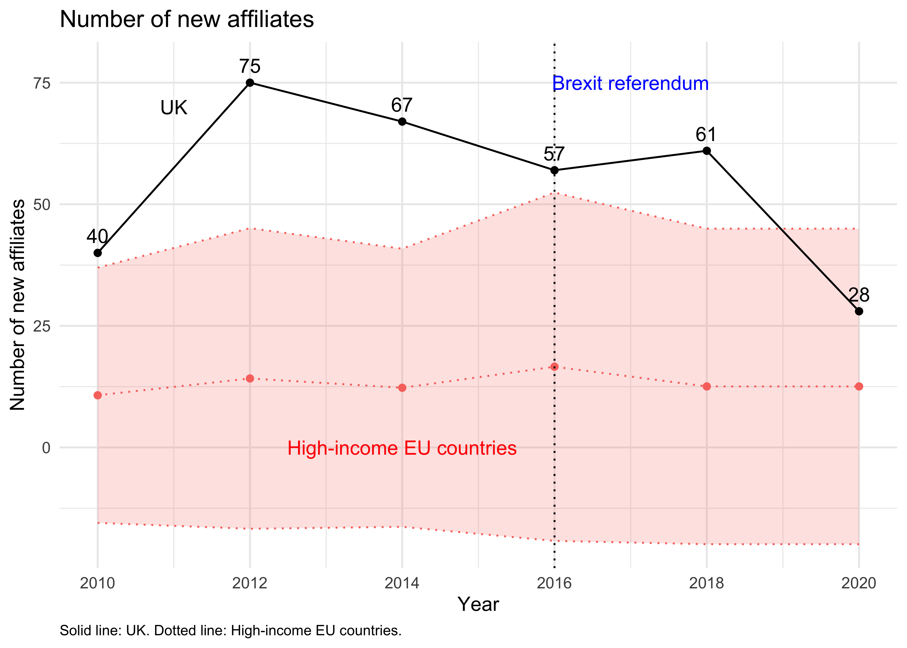

データに初めて現れる年を、その現地法人の参入年として扱う。
library(ggplot2)
library(dplyr)
library(rio)collapse <- rio::import("../../03_data_output/affiliate_entry_count_country_year.dta")High-income EU countries are Luxembourg, Ireland, Denmark, Netherlands, Sweden, Austria, Germany, Finland, Belgium, France, United Kingdom, and Italy. The GDP per capita of these countries are as follows:
# 2010年から2020年に限定
collapse <- subset(collapse, year >= 2010 & year <=2020)
# 高所得EU諸国を指定
EU_HI <- c("AUT", "BEL", "DNK", "FIN", "FRA", "DEU", "IRL", "ITA", "LUX", "NLD", "SWE", "GBR")
# 高所得EUダミーを作成
collapse$EU_HI <- ifelse(collapse$iso %in% EU_HI, 1, 0)
# 高所得EUサンプルだけ残す
collapse_EU_HI <- subset(collapse, EU_HI==1)
# 英国ダミーを作成
collapse_EU_HI$GBR <- ifelse(collapse_EU_HI$iso=="GBR", 1, 0)
# 年×英国ダミーで集計
collapseNse <- doBy::summaryBy(N ~ year + GBR, FUN=c(mean,sd),
data = collapse_EU_HI)
# 英国では標準偏差を 0 とする
collapseNse$N.sd[collapseNse$GBR==1] <- 0
# グループ名を作成
collapseNse$Group <- ifelse(collapseNse$GBR==1, "GBR", "High-income EU countries")# グループ別の平均参入件数と95%信頼区間を描画
ggplot(data = subset(collapseNse, GBR==0),
aes(x = year, y = N.mean,
color = Group)) +
geom_line(linetype = "dotted") +
geom_point() +
geom_ribbon(aes(ymin = N.mean - 1.96 * N.sd,
ymax = N.mean + 1.96 * N.sd,
fill = Group), alpha = 0.2,
linetype = "dotted") +
labs(title = "Number of new affiliates",
x = "Year",
y = "Number of new affiliates") +
theme_minimal() +
geom_line(data = subset(collapseNse, GBR==1),
linetype = "solid",
colour = "black") +
geom_point(data = subset(collapseNse, GBR==1),
colour = "black") +
geom_text(data = subset(collapseNse, GBR==1),
aes(label = N.mean),
nudge_y = 3.5,
#position = position_stack(vjust = 1.4),
colour = "black") +
theme(legend.position = "none") +
geom_vline(xintercept = 2016, linetype = "dotted") + # vertical line at 2016
labs(caption = "Solid line: UK. Dotted line: High-income EU countries.") +
theme(plot.caption = element_text(hjust = 0, size = 8)) +
annotate("text", x = 2017, y = 75,
label = "Brexit referendum",
colour = "blue") +
annotate("text", x = 2011, y = 70,
label = "UK", colour = "black") +
annotate("text", x = 2014, y = 0,
label = "High-income EU countries",
colour = "red") +
scale_x_continuous(breaks = ~ axisTicks(., log = FALSE)) 
# EPS形式で保存
ggsave("../../04_tex/main/Fig3b.eps", dpi = 300)